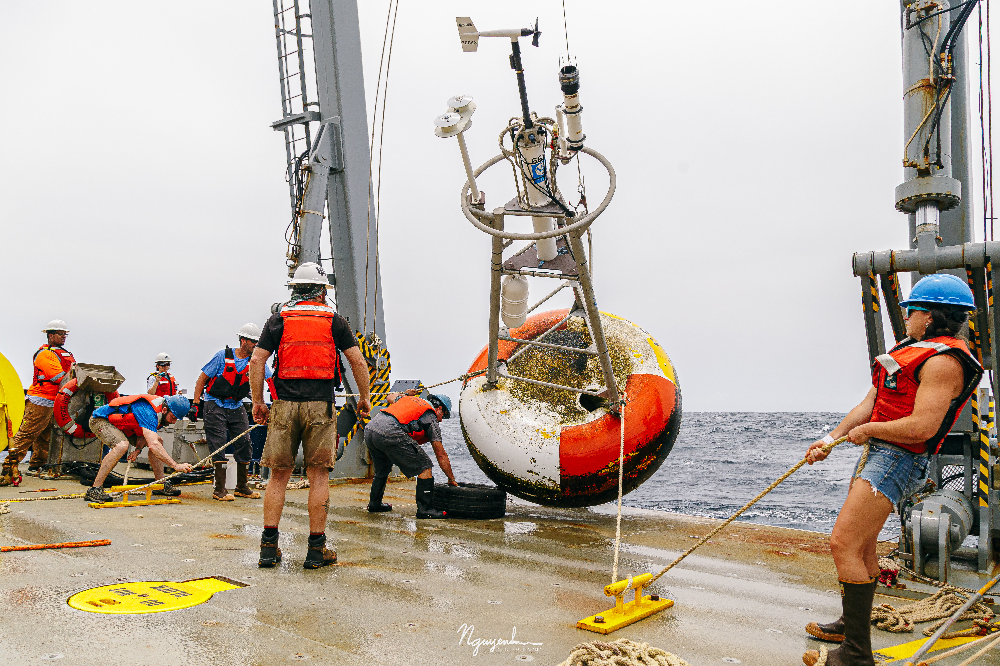

The current site's photos are excellent but underused. This concept gives them narrative authority so
the visitor feels the campaigns, platforms, and human scale of the work before reading the details.
Atmosphere first
The first screen behaves like an expedition journal cover.
Research still present
Scientific roles and themes are layered into the page as notebook entries.
Best asset usage
This is the direction that most fully exploits the existing photo library.
Field notebook
This site direction assumes the public story is strongest when it starts with the lived reality of
oceanography: ships, deployments, remote platforms, weather, and coordinated campaigns. From there,
the page introduces leadership, science themes, and publications.
Principal Investigator for NASA S-MODE
U.S. oceanographic lead for SWOT calibration and validation
Senior Scientist in WHOI Physical Oceanography
Co-PI in the WHOI Upper Ocean Processes Group

The strongest redesign opportunity is to stop treating fieldwork as an extra gallery and start using
it as the emotional and visual proof of the science.
What changes structurally
The current homepage is organized as separate cards for biography, research, roles, programs,
fieldwork, updates, and contact. This concept replaces that with an editorial spread: one dominant
image sequence, a few notebook entries, and a tighter set of calls to action.
What still needs a real page
Publications would remain a distinct destination, but the homepage would send people there through a
small, curated selection instead of exposing the full archive as a wall of citations.
Three evidence frames
Autonomous platforms as scientific infrastructure rather than technical side detail.
Longer-range observing systems can still fit naturally inside a field-led narrative.
Instrumentation photographs become part of the brand of the site, not supporting clutter.